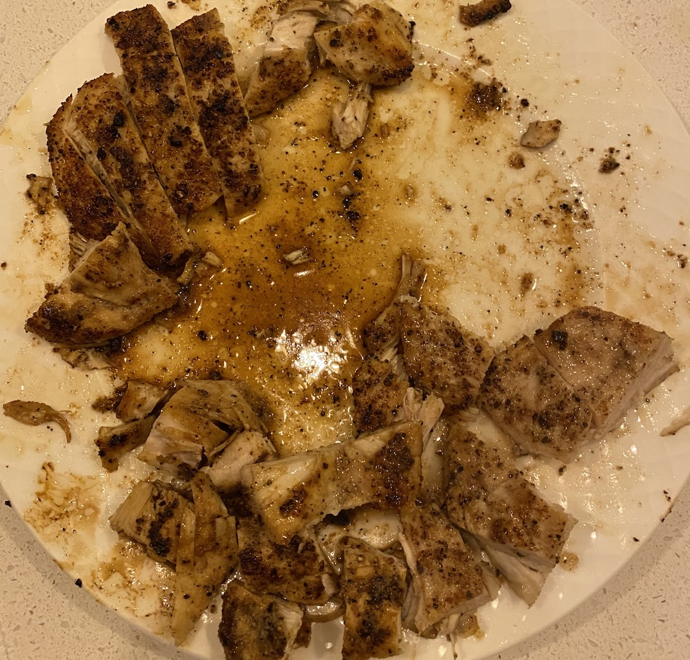
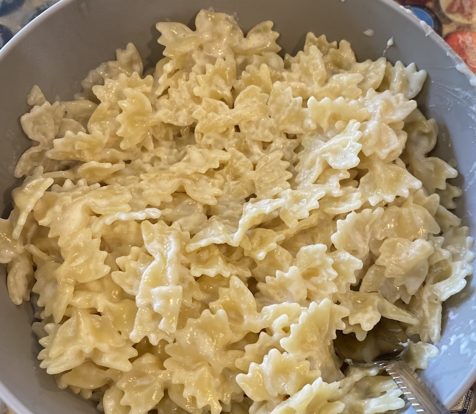

My Favorite Foods
- Pasta: Pasta has been one of my favorite foods for a long time. My mom makes a really great pasta dish that was my favorite meal growing up.
- Burger: A cheeseburger is often my go-to order at a restaurant. Sometimes I'll even get my burger with a pretzel bun.
- Pizza: It is hard to leave pizza off the list of my favorite foods. A good pizza with soft crust never fails to fill me up.
Chicken

Pasta Dish

Favorite Fast Food Restaurants
- Chic-FilA
- Panda Express
- Chipotle
- Wendys
- Jimmy Johns